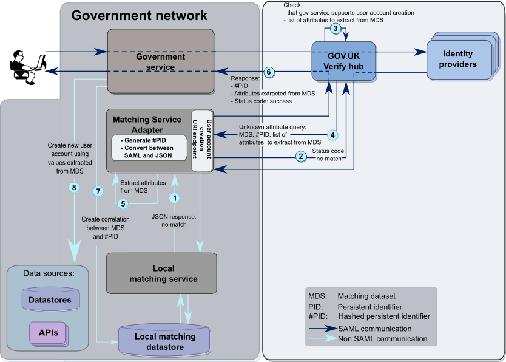

Create user accounts¶
You can create a new account for the user based on the hashed persistent identifier and a subset of attributes from the matching dataset. It’s optional to set up your matching service to support the creation of new accounts.
Important
Before creating a user account you must request explicit user consent.
- Make sure your Matching Service Adapter exposes its user account creation URI endpoint. This is the fully qualified URI to which the hub makes unknown user attribute queries (see step 4 in the diagram showing user account creation). The Matching Service Adapter then POSTs the following JSON to the local matching service’s user account creation URI endpoint:
[{ "hashedPid": "<some string value>", "levelOfAssurance": "<the level of assurance, e.g. LEVEL_1>" }]`You must specify the Matching Service Adapter’s user account creation URI endpoint on the form you fill in when you request access to an environment. This form is available from your engagement lead.
- Make sure the local matching service’s user account creation URI endpoint returns the following JSON, choosing success or failure as appropriate:
[{ "result": "<success or failure>" }]`Note
As shown in the above example,
successandfailuremust be in lower case.
- Configure your Matching Service Adapter to create new user accounts. To do this, supply the local matching service’s user account creation URI for the attribute
unknownUserCreationServiceUri:in the configuration file. See Configure the Matching Service Adapter for more information. - On the ‘Request access to an environment‘ form, enter the list of attributes you want the hub to return to your service when creating new user accounts. The options are:
FIRST_NAME FIRST_NAME_VERIFIED MIDDLE_NAME MIDDLE_NAME_VERIFIED SURNAME SURNAME_VERIFIED DATE_OF_BIRTH DATE_OF_BIRTH_VERIFIED CURRENT_ADDRESS CURRENT_ADDRESS_VERIFIED CYCLE_3Note
You cannot use historical data to create user accounts.
Create user accounts: message flow¶
This diagram shows the message flow for creating user accounts. The numbers identify each stage in the flow. See below for explanations.

User account creation |
For more details, see the diagrams: |
Note
In this example, all 3 matching cycles failed to find a match for the user in the government service records. See the diagram for matching cycles.
- Your local matching service sends a
no matchresponse to the Matching Service Adapter. - The Matching Service Adapter forwards the no match response to the GOV.UK Verify hub.
- The GOV.UK Verify hub:
- checks that your matching service supports the creation of new user accounts
- identifies the attributes you previously specified as necessary to create a new user account
- If your service supports the creation of new user accounts, the hub sends an unknown user attribute query to the Matching Service Adapter. It contains the:
- hashed persistent identifier
- matching dataset
- list of attributes to extract from the matching dataset
- The Matching Service Adapter extracts the required attributes from the matching dataset (if available).
- The Matching Service Adapter sends the extracted attributes and the hashed persistent identifier to your service via the GOV.UK Verify hub.
Note
The Matching Service Adapter must send this data via the GOV.UK Verify hub, to respect the following identity assurance principles:
- user control - the user must give their informed consent to the information being sent
- data minimisation - the service receives only the restricted set of attributes it needs, not the full matching dataset.
For more information see the Identity Assurance Principles.
- Optionally, the government service creates a correlation between the matching dataset and hashed persistent identifier in its matching datastore. This will be used for matching cycle 0 when the same user returns.
- Optionally, the government service creates a new account based on the attributes extracted from the matching dataset.
Important
If you create a new account you must gain consent from the user first.